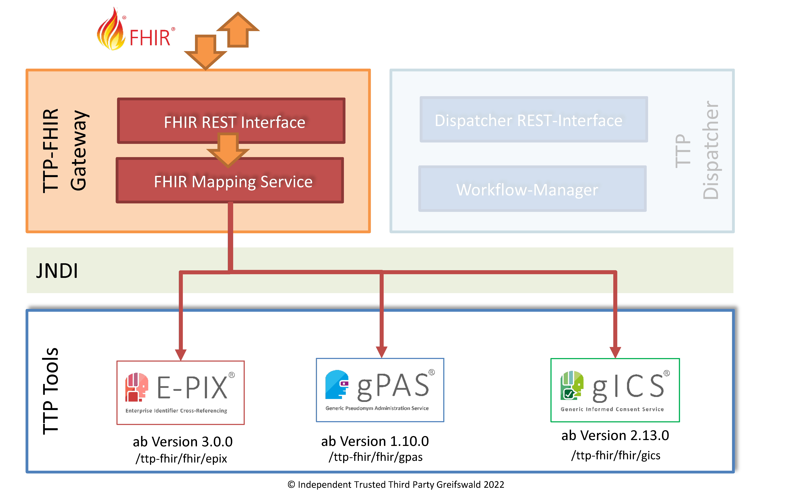

2025.2.0 - ci-build
IGTTPFHIRGatewayTerminologie - Local Development build (v2025.2.0) built by the FHIR (HL7® FHIR® Standard) Build Tools. See the Directory of published versions
Allgemein
Hintergrund
Die Treuhandstelle der Universitätsmedizin Greifswald stellt Open Source Lösungen in den Bereichen Einwilligungsmanagement, Pseudonymisierung und Record Linkage für die datenschutzkonforme Durchführung medizinischer Forschungsvorhaben bereit. Für die Umsetzung der informationellen Gewaltenteilung hat sich der Aufbau einer Unabhängigen Treuhandstelle (a.k.a Datentreuhänder, kurz: THS, engl. TTP) bewährt.
Die Treuhandstellen-Werkzeuge gICS, gPAS und E-PIX setzen einheitlich auf Service-orientierte Architekturen (SOAP). Funktionalitäten lassen sich problemlos unter Zuhilfenahme eines Workflow-Managers (Dispatcher) orchestrieren und per REST-Interface ansteuern.
Bisherige Forschungsvorhaben (z.B. NAKO Gesundheitsstudie, DZHK e.V., dem MII-Konsortium MIRACUM) konnten unter Verwendung dieser Web-Services und entsprechender Integrationsarbeit vollumfänglich realisiert werden.
Das TTP-FHIR Gateway
Um sowohl bestehende Anwenderprojekte als auch künftige Nutzer bei der Umsetzung FHIR-orientierter Infrastrukturen und Prozesse zu unterstützen, soll künftig ein zusätzliches Treuhandstellen-FHIR-Gateway (kurz: TPP-FHIR Gateway) als Mittler von FHIR-spezifischen Infrastrukturkomponenten und den bestehenden THS-Werkzeugen dienen.

Das TTP-FHIR-Gateway stellt eine FHIR-Schnittstelle zum Aufruf ausgewählter Werkzeug-Funktionen von E-PIX, gPAS, gICS und Dispatcher in Form von FHIR-Ressourcen über entsprechende Suchaufrufe und FHIR-Operations bereit.
Dabei fungiert das TTP-FHIR Gateway ausschließlich als Übersetzer zwischen FHIR-Aufrufen des anfragenden Systems und den zugeordneten Funktionalitäten der einzelnen Werkzeuge. Dafür nötige Zugriffe werden innerhalb des Anwendungsservers per JNDI realisiert.
Das TTP-FHIR Gateway realisiert keine Anwendungslogik. Die Auswertung der übermittelten FHIR-Inhalte obliegt entsprechend dem anfragenden System.
Erfahrungsgemäß ist jedes Forschungsvorhaben individuell. So verhält es sich auch mit den Infrastrukturen. Das TTP-FHIR Gateway ist sowohl in Projekten, die "nur" gPAS, E-PIX oder gICS (bzw. eine Kombination der Tools) nutzen, anwendbar als auch in Projekten, die auf den Workflow-Manager (TTP-Dispatcher) setzen und somit nur indirekt mit den zugeordneten Tools kommunizieren.
Das TTP-FHIR Gateway ist eine eigenständige Softwarekomponente. Bestehende Anwendungsserver, die bereits TTP-Werkzeuge bereitstellen, werden einfach um ein weiteres Deployment ergänzt.
Die aktuellen Releases der Werkzeuge umfassen bereits das TTP-FHIR Gateway standardmäßig.
FHIR-Endpunkte
Für die verschiedenen Bereiche werden jeweils eigene FHIR-Endpunkte eingerichtet. Diese sind:
| Bereich | [base] (FHIR-Endpunkt) |
|---|---|
| Record Linkage und Identitätsmanagement | http[s]://<host>:<port>/ttp-fhir/fhir/epix |
| Pseudonymmanagement | http[s]://<host>:<port>/ttp-fhir/fhir/gpas |
| Einwilligungsmanagement | http[s]://<host>:<port>/ttp-fhir/fhir/gics |
| Übergreifende Schnittstellen | http[s]://<host>:<port>/ttp-fhir/fhir/dispatcher |
RESTful API
Für die RESTful API gelten grundsätzlich die entsprechenden Maßgaben des FHIR-Standards.
Dies gilt insbesondere auch für das RFC-konforme Escapen bestimmter Sonderzeichen (URL-Encoding). An dieser Stelle sei ausdrücklich darauf hingewiesen, dass auch das Pipe-Symbol "|" im Rahmen der vorliegenden Implementierung jederzeit escaped werden muss, d.h. anstelle des "|" ist das Encoding "%7C" zu übermitteln.
Suche
Für Such-Requests gelten ebenfalls die entsprechenden Vorgaben des FHIR-Standards (http://www.hl7.org/fhir/search.html).
Hier sei besonders auf die Vorgaben für die logische UND- bzw. ODER-Verknüpfung hingewiesen (http://www.hl7.org/fhir/search.html#combining)